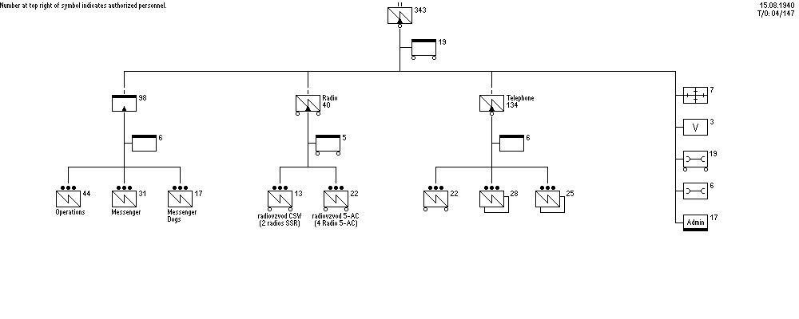

|
|
World War II Armed Forces — Orders of Battle and Organizations | Last Updated 10.03.2010 |
|
Soviet Armed Forces
Organization Mountain Rifle Division Signal Battalion 22 June 1941 |
|

Some data retrieved from Workers' and Peasants' Red Army Website (10.03.2010)
|